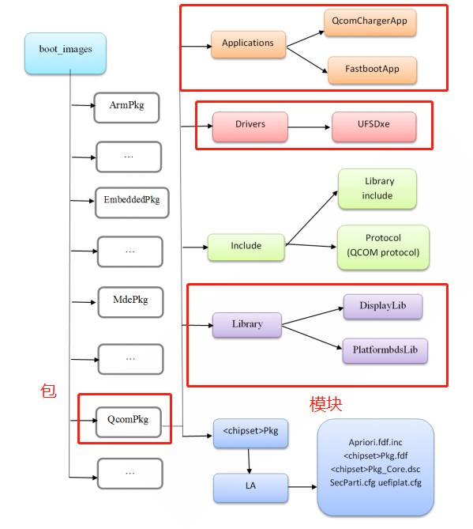

README
高通UEFI学习。
refer
模块(Module)和包(Package)
在EDK2环境下编程之前，先介绍EDK2的两个概念模块(Module)和包(Package). “包”是一组模块及平台描述文件(.dsc文件)、包声明文件(.dec文件)则、组成的集合，多在以*pkg命名的文件夹中，一般也称这样的文件夹为一个包。 模块是UEFI系统的一个特色。模块(可执行文件，即.efi文件)像插件一样可以动态地加载到UEFI内核中。对应到源文件，EDK2中的每个工程模块由元数据文件(.inf)和源文件(有些情况也可以包含.efi文件)组成。 主要介绍3种应用程序模块、UEFI驱动模块和库模块。

Protocol服务
UEFI 驱动程序使用Protocol服务来访问其他模块产生的Protocol接口。 UEFI 规范定义了一组引导服务来处理Protocol， 包含： 实现动态链接时使用Protocol。 对于静态链接使用库。 要实现任何想要动态使用的新服务，请使用Protocol。
如何通过protocol找到驱动对应接口
如何通过protocol找到驱动对应接口，比如驱动调用
ChargerLib_GetBatteryStatus这个接口，我们跟进代码如下：QcomPkg/Library/ChargerLib/ChargerLibCommon.c:
* EFI_STATUS ChargerLib_GetBatteryStatus(chargerlib_batt_status_info *pBatteryStatus)
└── ChargerLibTarget_GetBatteryStatus(pBatteryStatus)
└── PmicQgProtocol->GetBatteryStatus(BatteryGaugeInfo.QGaugePmicInfo.PmicIndex,(EFI_PM_QG_BATT_STATUS_INFO *)&BatteryStatus);//QcomPkg/Library/ChargerLib/target/Agatti/ChargerLibTarget.c
EFI_PM_QG_BATT_STATUS_INFO结构体如下，定义了所有protocol支持的函数：
typedef struct _EFI_PM_QG_BATT_STATUS_INFO
{
UINT32 StateOfCharge;
INT32 ChargeCurrent;
INT32 BatteryVoltage;
INT32 BatteryTemperature;
}EFI_PM_QG_BATT_STATUS_INFO;
我们通过检索
EFI_PM_QG_BATT_STATUS_INFO结构体可以找到定义它的驱动位置：
QcomPkg/Drivers/PmicDxe/Qg/PmicQg.c
203: OUT EFI_PM_QG_BATT_STATUS_INFO *BattStsInfo
207: EFI_PM_QG_BATT_STATUS_INFO stsInfo = {0};
294: OUT EFI_PM_QG_BATT_STATUS_INFO *BattStsInfo
找到定义函数如下，可以看到该接口主要是获取电池电流电压和温度：
/**
EFI_PmicQgBatteryStatus()
@brief
Returns Battery Status parameters such as State of Charge (SOC)
*/
EFI_STATUS
EFIAPI
EFI_PmicQgGetBatteryStatus
(
IN UINT32 PmicDeviceIndex,
OUT EFI_PM_QG_BATT_STATUS_INFO *BattStsInfo
)
{
EFI_STATUS Status = EFI_SUCCESS;
EFI_PM_QG_BATT_STATUS_INFO stsInfo = {0};
if(NULL == BattStsInfo )
{
return EFI_INVALID_PARAMETER;
}
Status = PmicQg_GetBatteryStatus(PmicDeviceIndex, &stsInfo);
*BattStsInfo = stsInfo;
return Status;
}
/**
PmicQg_GetBatteryStatus
@brief
Returns Battery Status parameters such as Voltage
*/
EFI_STATUS
PmicQg_GetBatteryStatus
(
IN UINT32 PmicDeviceIndex,
OUT EFI_PM_QG_BATT_STATUS_INFO *BattStsInfo
)
{
EFI_STATUS Status = EFI_SUCCESS;
pm_err_flag_type errFlag = PM_ERR_FLAG_SUCCESS;
UINT32 VBat = 0;
INT32 ibat = 0;
INT32 BattTemp = 0;
if(NULL == BattStsInfo )
{
return EFI_INVALID_PARAMETER;
}
/* Get Battery voltage */
errFlag = pm_qgauge_get_vbat(PmicDeviceIndex, &VBat);
Status = (PM_ERR_FLAG_SUCCESS == errFlag)? EFI_SUCCESS : EFI_DEVICE_ERROR;
BattStsInfo->BatteryVoltage = VBat;
/* Get Battery charge current */
errFlag |= pm_qgauge_get_ibat(PmicDeviceIndex, &ibat);
BattStsInfo->ChargeCurrent = ibat;
errFlag |= PmicQg_ReadBattTemp(&BattTemp);
BattStsInfo->BatteryTemperature = BattTemp;
return (Status | errFlag);
}
Library如何互相调用方法
比如在
QcomPkg/Library/路径下的MDPLib想调用HALDSILib里面的函数，方法如下：
在
MDPLib.inf中增加需要链接的库模块HALDSILib：
[LibraryClasses]
HALDSILib
增加函数定义：
--- a/A6650_Unpacking_Tool/BOOT.XF.4.1/boot_images/QcomPkg/Include/Library/HALDSILib.h
+++ b/A6650_Unpacking_Tool/BOOT.XF.4.1/boot_images/QcomPkg/Include/Library/HALDSILib.h
@@ -212,5 +212,9 @@ MDP_Status DsiPanelShutdown(MDP_Panel_AttrType *pPanelInfo);
*//* -------------------------------------------------------------------- */
MDP_Status DsiPanelDumpRegisters(void);
+//[NEW FEATURE]-BEGIN by wugangnan@paxsz.com 2023-02-03, set lcd/tp id to kernel cmdline
+void Set_PanelDisplayId(uint32 DisplayId);
+uint32 Get_PanelDisplayId(void);
+//[NEW FEATURE]-END by wugangnan@paxsz.com 2023-02-03, set lcd/tp id to kernel cmdline
#endif /* #define HALDSILIB_H */
diff --git a/A6650_Unpacking_Tool/BOOT.XF.4.1/boot_images/QcomPkg/Library/HALDSILib/dsiDriver.c b/A6650_Unpacking_Tool/BOOT.XF.4.1/boot_images/QcomPkg/Library/HALDSILib/dsiDriver.c
index 77741e25c5e..8c1b9ac6184 100755
--- a/A6650_Unpacking_Tool/BOOT.XF.4.1/boot_images/QcomPkg/Library/HALDSILib/dsiDriver.c
+++ b/A6650_Unpacking_Tool/BOOT.XF.4.1/boot_images/QcomPkg/Library/HALDSILib/dsiDriver.c
@@ -1461,7 +1461,18 @@ static MDP_Status SendPanelXMLSequence(DSI_DriverCtx *pDriverCtx, void *pDSIComm
return eStatus;
}
+//[NEW FEATURE]-BEGIN by wugangnan@paxsz.com 2023-02-03, set lcd/tp id to kernel cmdline
+static uint32 PaxDisplayId = 0;
+void Set_PanelDisplayId(uint32 DisplayId)
+{
+ PaxDisplayId = DisplayId;
+}
+uint32 Get_PanelDisplayId(void)
+{
+ return PaxDisplayId;
+}
+//[NEW FEATURE]-END by wugangnan@paxsz.com 2023-02-03, set lcd/tp id to kernel cmdline
包含
HALDSILib.h即可调用：
--- a/A6650_Unpacking_Tool/BOOT.XF.4.1/boot_images/QcomPkg/Library/MDPLib/DisplayUtils.c
+++ b/A6650_Unpacking_Tool/BOOT.XF.4.1/boot_images/QcomPkg/Library/MDPLib/DisplayUtils.c
@@ -69,7 +69,6 @@
#include "HALDSILib.h"
@@ -839,6 +890,21 @@ void panelConfigOutput(const PanelDTInfoType *psDTInfo, uint32 primary, uint32 u
LocalAsciiStrnCat(*ppStr, PANEL_CONFIG_STR_LEN_MAX, (CHAR8 *)psDTInfo->DTLabel);
(*ppStr) += AsciiStrLen(psDTInfo->DTLabel);
+ //[NEW FEATURE]-BEGIN by wugangnan@paxsz.com 2023-02-03, set lcd/tp id to kernel cmdline
+ PanelDisplayId = Get_PanelDisplayId();
+ PanelTPID = PanelDisplayId >> 10;
+ PanelLCDID = PanelDisplayId & 0x3FF;
+ itoa(PanelTPID, tp_id_value, 10);
+ itoa(PanelLCDID, lcd_id_value, 10);
+ //DEBUG((EFI_D_ERROR, "tp_id_value = %s lcd_id_value = %s", tp_id_value, lcd_id_value));
+ LocalAsciiStrnCat(tp_id, PANEL_CONFIG_STR_LEN_MAX, tp_id_value);
+ LocalAsciiStrnCat(*ppStr, PANEL_CONFIG_STR_LEN_MAX, tp_id);
+ (*ppStr) += AsciiStrLen(tp_id);
+ LocalAsciiStrnCat(lcd_id, PANEL_CONFIG_STR_LEN_MAX, lcd_id_value);
+ LocalAsciiStrnCat(*ppStr, PANEL_CONFIG_STR_LEN_MAX, lcd_id);
+ (*ppStr) += AsciiStrLen(lcd_id);
+ //[NEW FEATURE]-END by wugangnan@paxsz.com 2023-02-03, set lcd/tp id to kernel cmdline
+
if (uTopology)